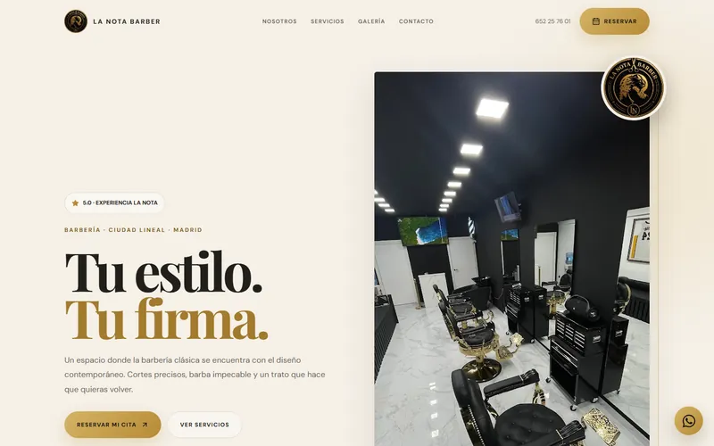

La Nota Barber
Web para una barbería de Ciudad Lineal, en Madrid. Una identidad que mezcla la barbería clásica con un diseño actual, y un recorrido pensado para que el cliente vea los servicios y llegue a reservar en pocos pasos.
- Tipo
- Web para negocio local
- Mi rol
- Diseño y desarrollo web
- Tecnología
- HTML, CSS, JavaScript, Supabase
- Estado
- Publicada

La necesidad
Una barbería de barrio vive de que la encuentren, le tengan confianza y reserven sin fricción. La web tenía que transmitir el ambiente del local, enseñar qué servicios ofrece y llevar al cliente a reservar o a escribir en pocos segundos, sobre todo desde el móvil.
Qué se construyó
- Portada con identidad propiaTitular editorial, foto real del local y accesos directos a reservar, ver servicios o llamar.
- Servicios cargados desde una base de datosLa lista de servicios se lee de Supabase, así que se puede actualizar sin tocar el código.
- Catálogo de productos con filtrosProductos con imagen alojada en Supabase Storage. Se piden por WhatsApp con un mensaje ya preparado y se recogen en la barbería.
- Panel privado de gestiónPágina de administración, fuera de buscadores, para mantener el catálogo.
- Galería, opinión, mapa y contactoTrabajos del equipo, enlace a Instagram, mapa de Google integrado, horario, teléfono y botón flotante de WhatsApp.
Cómo funcionan las reservas
La web no confirma citas por sí misma. Todos los botones de reserva llevan a la página de la barbería en Booksy, donde el cliente elige servicio, día y hora y recibe allí la confirmación. Para consultas, la web abre WhatsApp con un mensaje inicial o permite llamar directamente.
Decisiones de diseño
Fondo crema, tipografía serif de alto contraste y detalles en dorado que recogen el logotipo del local: una estética cálida y clásica, lejos del negro total habitual en barberías.
Botones de reserva repetidos en los puntos donde el cliente decide (cabecera, portada, cada servicio y cierre), y teléfono y WhatsApp siempre a mano en móvil.
Resultado observable
La web está publicada y se puede recorrer completa. El contenido que más cambia (servicios y productos) se edita desde el panel sin volver a publicar la web, y la reserva queda en manos de una plataforma especializada.